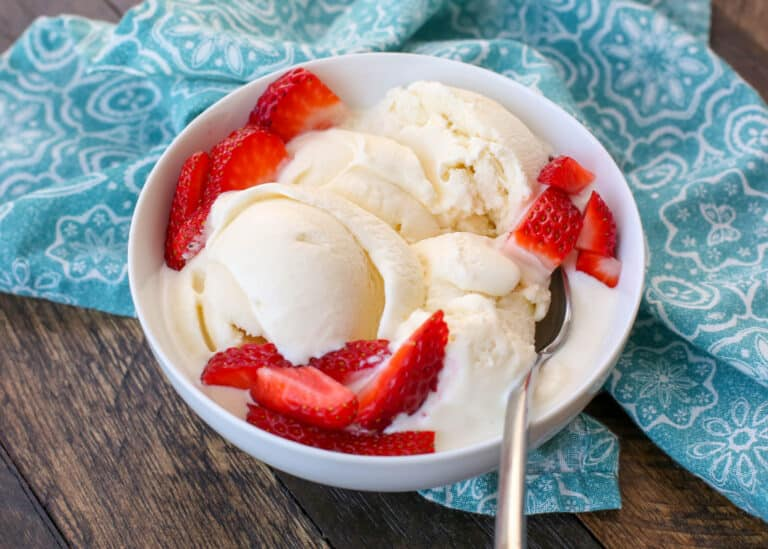

How to make the Ultimate Guilty Pleasure Vanilla Ice Cream

Description
This recipe provides detailed instructions to make the the ultimate vanilla ice cream!
Ingredients
-
Cream
-
Sugar
-
Salt
-
Vanilla Beans
-
Milk
Steps
-
Pour 1 cup of the cream into a saucepan and add the sugar, salt.
Scrape the seeds of the vanilla bean into the pot and then add the vanilla pod to the pot.
-
Warm the mixture over medium heat, just until the sugar dissolves.
Remove from the heat and add the remaining cream, milk, and vanilla.
Stir to combine and chill in the refrigerator.
-
When ready to churn, remove the vanilla pod, whisk mixture again and pour into ice cream maker.
Churn according to the manufacturer’s instructions.
-
Transfer the finished ice cream to an airtight container and place in the freezer until ready to serve.
Go back for more fun recipes!